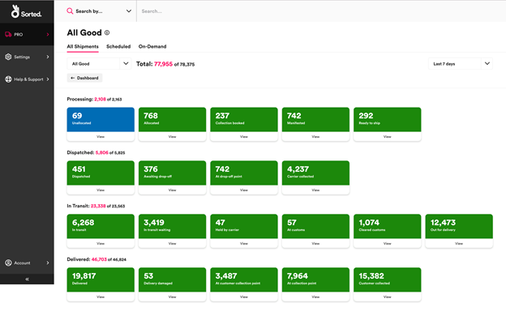
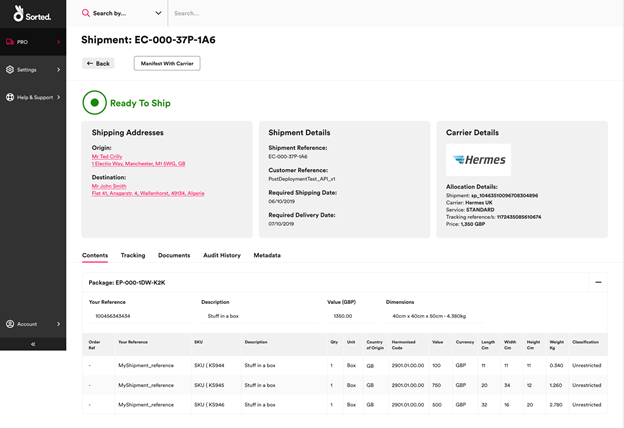

Managing Existing Shipments
This page explains how to view details of your existing shipments both individually and in groups, and how to use the Sorted Portal to perform shipment actions.
[!include[_development_statement](../pro/api/includes/_development_statement.md)]Accessing the Shipments Dashboard
You can view your existing shipments via the Shipments dashboard. To access the Shipments dashboard, select PRO > View Shipments from the main menu.
Filtering Shipment Data
Initially, the dashboard displays four tiles, enabling you to filter your shipments by exception status.
Selecting a tile displays a dashboard showing the number of shipments in that exception status, broken down into shipment state. The available tiles are:
All Shipments - enables you to view all of your current shipments.
Critical Exception - enables you to view information on only those shipments that are in a "red" or critical state (such as Missing or Damaged). Shipments in a critical state generally require further action to ensure successful delivery of the shipment.
Other Exceptions - enables you to view information on only those shipments that are in a "amber" shipment state (such as Delayed or Delivery Failed). Amber shipment states are generally for notification only, but may require further action later.
All Good - enables you to view information on only those shipments that are in a "green" shipment state (such as Manifested or In Transit). Green shipment states are states that are expected throughout the successful delivery lifecycle of a shipment. These states generally do not require intervention and are for informational and auditing purposes only.

You can navigate between exception states using the drop down menu below the page header.
Each exception status dashboard has tabs at the top enabling you to further filter the information displayed:
- All Shipments - displays information on all shipments that are in states with the selected exception status.
- Scheduled – displays information on only those shipments that are intended to be allocated to a scheduled service (that is, the pickup location has a regularly planned collection).
- On-Demand – displays information on only those shipments that are intended to be allocated to an on-demand service (that is, the pickup location does not have a regular, scheduled collection from a pre-defined location).
Select a shipment state tile to view the Shipment Summary page for that state.
Viewing a List of Shipments
The Shipment Summary page displays a list of all the individual shipments within a particular shipment state.

You can view the Shipment Summary page either by navigating through the Shipments dashboard or by using the Search By bar at the top of the page. The Search By bar enables you to search for shipments by Shipment Reference, Custom Reference, Postcode, or Tracking Reference, and displays a list of only the shipments that meet the specified criteria.
The Shipment Summary page includes the following information for each shipment:
- Reference – The auto generated unique reference.
- Custom Reference – As provided by the customer.
- Date Created
- Required Shipping Date – Requested date of collection from the origin location.
- Required Delivery Date – Requested date of delivery to the destination.
- Destination
- Carrier Service – The allocated Carrier Service
- Actual Delivery Date
Select a shipment to display the View Shipment page.
Viewing Individual Shipments
The View Shipment page displays all information relating to a particular shipment.

The View Shipment page includes the following sections:
- Actions – enables you to perform shipment actions (e.g. Allocate / Cancel / Manifest).
- Address – the collection and delivery points for the shipment.
- Shipment Details – references and required shipping/delivery dates for the shipment.
- Carrier Details – information relating to the current allocated carrier.
- Contents Tab – information relating to the contents of the shipment, such as line items, cost, value, dimensions etc.
- Tracking Tab – available tracking information for the shipment.
- Documents Tab – lists all labels and applicable documentation, such as customs documentation or Commercial Invoices. All listed items can be printed. This tab is not displayed if there are no documents available.
- Metadata Tab – displays any metadata applied to the shipment.
Performing Shipment Actions
The Actions panel of the View Shipment page is displayed at the top of the screen. This panel contains various buttons that you can use to progress the shipment into a further state. The actions available to a shipment changes depending on the state that that shipment is in.
This section explains the shipment actions available and the circumstances in which they can be used:
Allocating with Default Rules
Allocate with Default Rules allocates the shipment to the best available carrier service. PRO uses the following process to determine the service used:
- Filter Carrier Services - PRO determines which carriers have services available that can be used for the requested shipment.
- Perform Parameter Validation - PRO takes allocation rules and carrier specifics (such as packaging sizes, zones, and delivery time windows) into account, removing any services that do not meet these criteria.
- Order by Value - If two or more services remain, then PRO provides the cheapest option as the option of choice.
Once allocated, the shipment progresses to the Allocated state. If the shipment cannot be allocated, then it progresses to the Allocation Failed state.
Note
For more information on configuring allocation rules, see the Managing Shipping Rules page.
Allocating with Service Group
Allocate with Service Group allocates the shipment using a user-defined pool of carrier services. PRO allocates within this pool via the same process as Allocate with Default Rules.
Once allocated, the shipment progresses to the Allocated state. If the shipment cannot be allocated, then it progresses to the Allocation Failed state.
Note
For more information on configuring service groups, see the Managing Carrier Service Groups section of the Managing Carrier Services page.
Manifesting a Shipment
In the context of PRO, the term "manifesting" refers to collating, formatting and transmitting shipment data to carriers. It is the final step of many Sorted workflows. Once manifested, the shipment progresses to the Manifested state. If the shipment cannot be manifested, then it progresses to the Manifest Failed state.
Cancelling a Shipment
Once a shipment has been cancelled, no further actions can be performed on it.
Note
You can only cancel shipments that are in one of the following states:
- Unallocated
- Allocated
- Allocation Failed
- Manifest Failed